About the Event
Sydney Hydrology Day is an annual one-day forum that brings together researchers and professionals across Sydney to share advances in hydrology and water science more generally. The main focus is on providing networking opportunities for postgraduate candidates, early-career researchers, and early-career professionals.
The program blends a panel discussion and themed presentation sessions to highlight current research, practical applications, and emerging methods in hydrology and the science of water across universities and research institutions in the Sydney Basin. With a strong focus on postgraduate and early-career work, the day fosters collaboration between universities and industry and strengthens the hydrology community within the Sydney region.
We invite contributions from researchers across engineering and environmental science, with areas of interest such as water quality, water quantity, ecohydrology, water ecology, and water management.
Photos from SHD 2026
A glimpse of the inaugural Sydney Hydrology Day held on 10 February 2026.
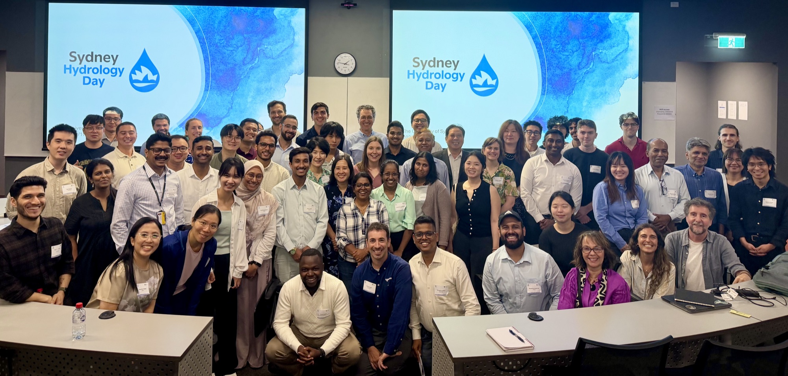
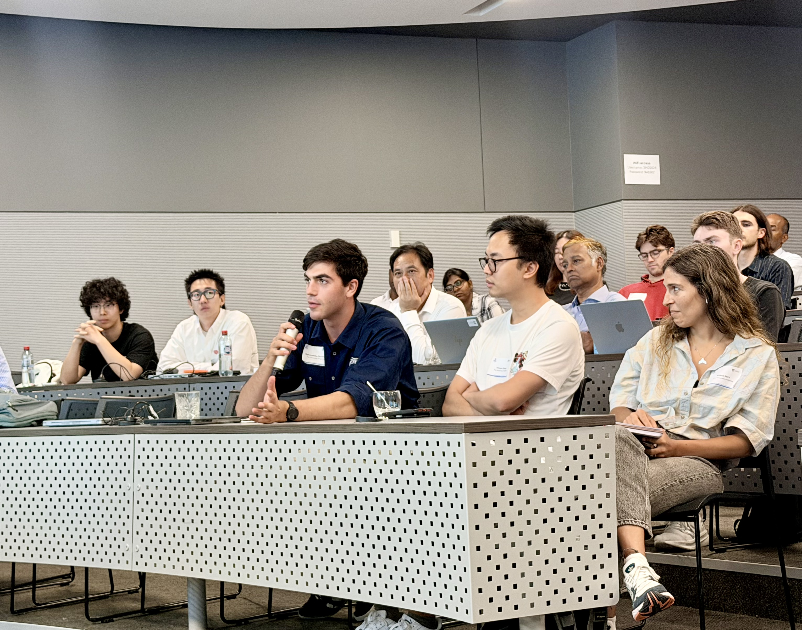
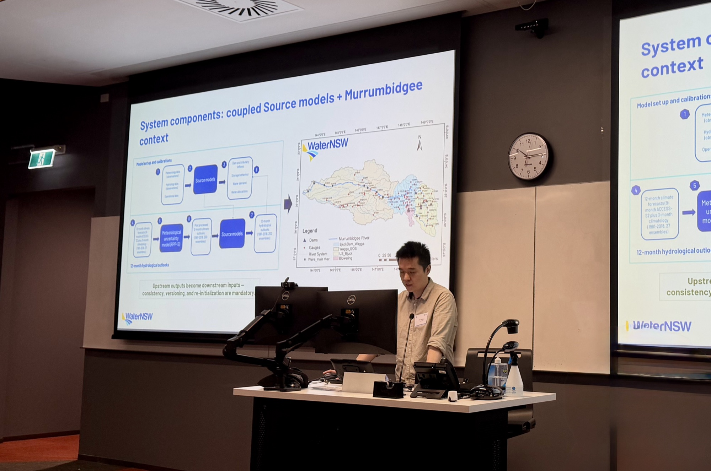
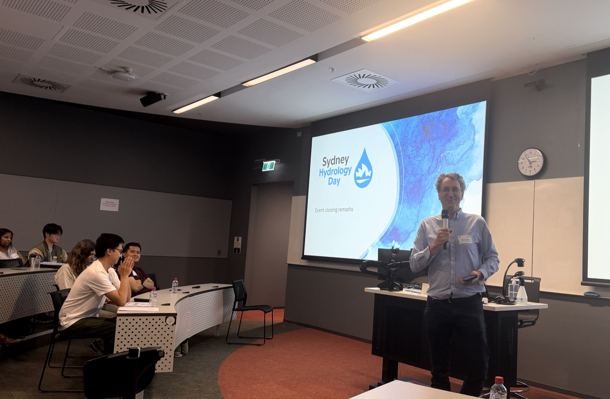
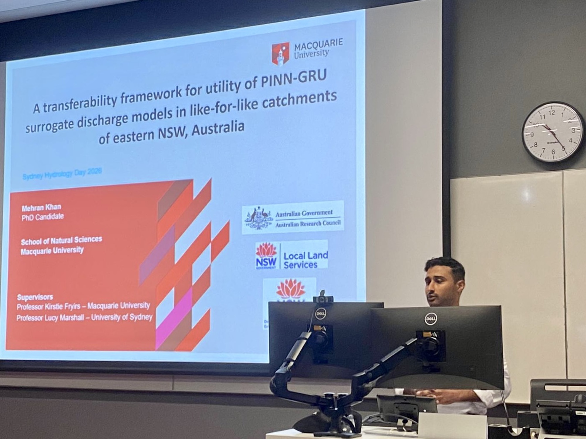
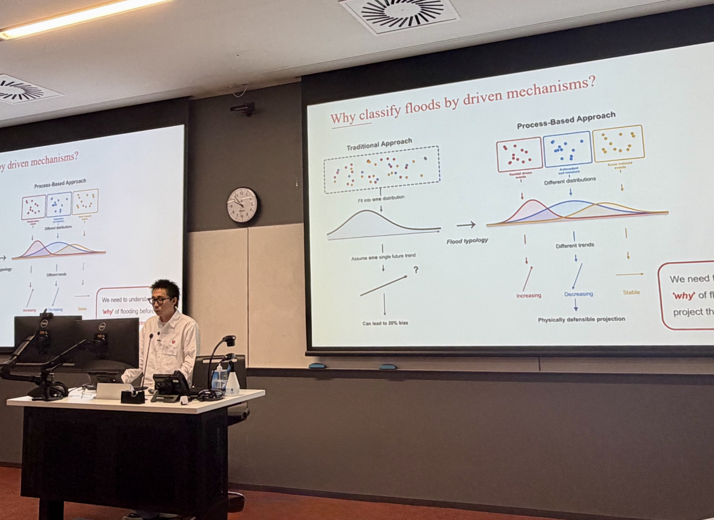
Important Dates
| Milestone | Date |
|---|---|
| Abstract Submission Deadline | 4 December 2026 |
| Notification of Acceptance | ~18 December 2026 |
| Final Day for Registration | Late January 2027 |
| Sydney Hydrology Day 2027 Event Day | 9 February 2027 |
Program
Professor Kirstie Fryirs
Macquarie University • Fluvial Geomorphology & River Management
We are pleased to announce that Professor Kirstie Fryirs has kindly agreed to deliver the opening keynote for Sydney Hydrology Day 2027.
Prof. Fryirs' research focuses on fluvial geomorphology and river management, investigating the structure and function of rivers, how they adjust and evolve, anthropogenic impacts, and how to best use geomorphology in river conservation, recovery, and rehabilitation. She is widely known for her pioneering work on the River Styles Framework, a geomorphic approach to river analysis supporting management practice.
2027 Program: A new program for the 2027 Sydney Hydrology Day will be posted in late 2026.
Show 2026 Program ▾
| Time | Session / Presentation Title | Speaker / Affiliation |
|---|---|---|
| 8:30 am | Registration | |
| 8:55 am | Welcome to Country | |
| 9:00 am | Event opening talk (online) | Professor Ashish Sharma (UNSW) |
| 9:30 am | Session 1: Water Quantity | |
| Constrained negentropy optimisation (CoNE-opt): Using independent components to merge satellite data products | Suraj Shah (UNSW) | |
| Nature-Based Water Solutions or Rain-Independent Water Solutions: A Choice for Sydney's Future Water Security | Shu-Qing Yang (UOW) | |
| Developing a flood typology for Australia | Xiang Ma (USYD) | |
| Enhancing Run-of-River Hydropower Reliability through Spatial Pooling of River Catchments | Mirza Kurniawan (UNSW) | |
| Challenges in Setting Up Hydrological Models for Long-Range Forecasts in Operational and Regulatory Settings | Xudong Han (WaterNSW) | |
| A transferability framework for utility of PINN-GRU surrogate discharge models in like-for-like catchments of eastern NSW, Australia | Mehran Khan (Macquarie University) | |
| 10:30 am | Morning tea and networking | |
| 11:00 am | Panel Discussion: 'The Future of hydrology' Featuring a panel of Early Career Researchers |
Host: Dr Conrad Wasko (USYD) |
| 12:00 pm | Session 2: Water Quality and Eco Hydrology | |
| Improved T&O Control in Drinking Water Treatment: From PAC Enhancements to Hybrid PAC-Ceramic Membrane Solutions | Sebastian Fang (USYD) | |
| Enhancing Hydroclimate Extreme Prediction Through Continuous Wavelet-Based Predictor Refinement | Sunil Thapa (UNSW) | |
| Restoring Ecosystems by Manipulating Hydrology: A Case Study on Swampy Meadows | Alex Sun (USYD) | |
| Probabilistic, Model-Free Detection of Hydrological Regime Shifts From Observed Data | Enock Kajubi (Monash University) | |
| SWEB 1.0: A satellite-driven soil water-energy balance model for estimating high-resolution crop evapotranspiration and root-zone soil moisture | Yi Yu (USYD) | |
| Quantifying the Manning's n roughness coefficient for riparian vegetation classes using Terrestrial Laser Scanning (TLS) | Jay Chauhan (Macquarie University) | |
| 1:00 pm | Lunch and networking | |
| 1:45 pm | Session 3: Water Quantity | |
| A machine learning framework to enhance long-term forecast with spectrally transformed hydrological predictors | Liangjing Zhang (UNSW) | |
| Overcoming Parameter and Climate Sensitivity in Hydrologic Event Identification | Mohammad Masoud Mohammadpour (ANU) | |
| Non-Stationary Approach in Designing Water Infrastructure | Tias Ravena Maitsa (UNSW) | |
| Leveraging BARRA based research advances in portfolio wide hydrologic risk assessments in rural NSW | Ha Nguyen (WaterNSW) | |
| Surrogate River Discharge Modelling for Streamflow Estimation in Ungauged Basins | Hannah Yoon (University of Newcastle) | |
| State-Dependent Residual Modelling for Hydrological Systems: Towards a Global Runoff Correction Framework | Muhammad Hammad (UNSW) | |
| 2:45 pm | Event closing remarks | |
| 3:00 pm | End of the event (Followed by informal drinks) |
SHD 2026 — All Photos
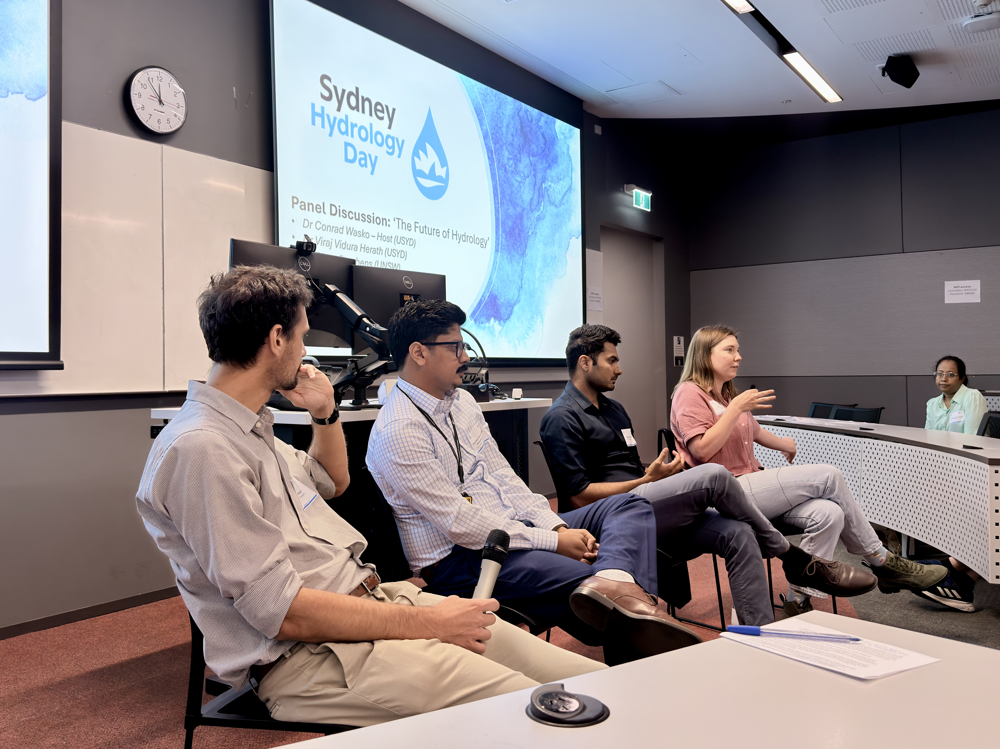
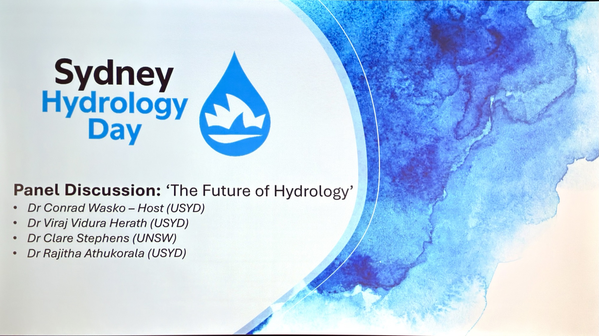
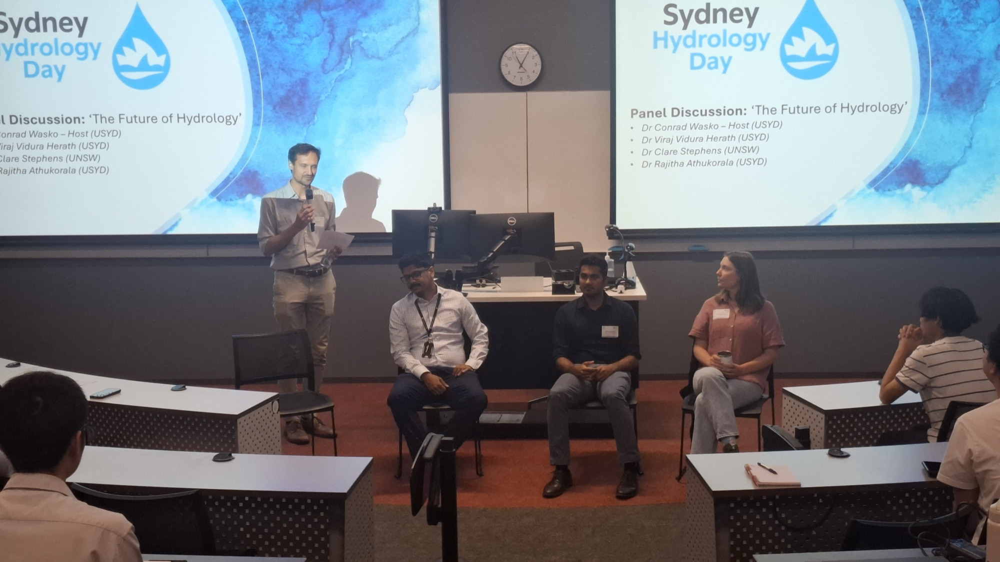
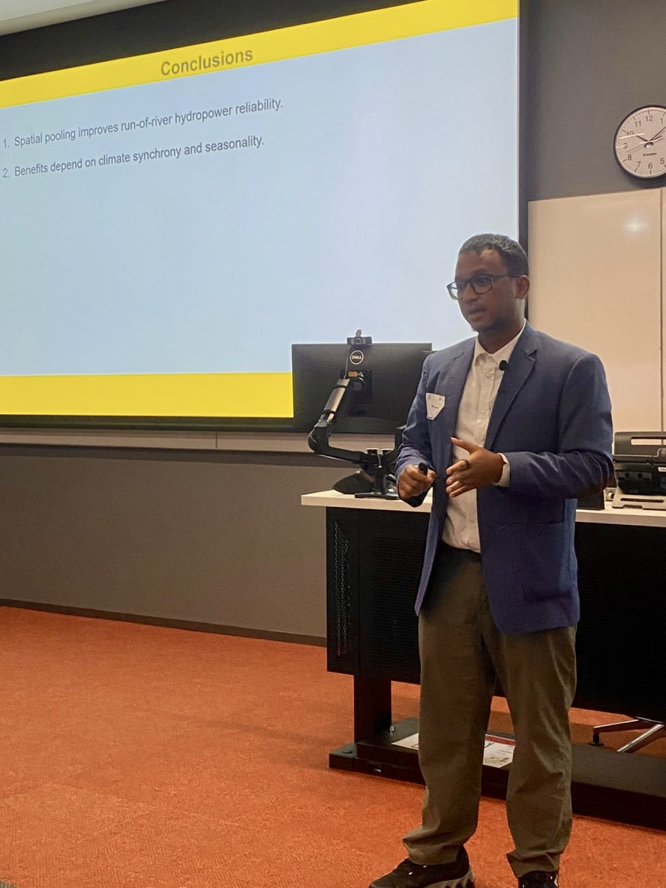
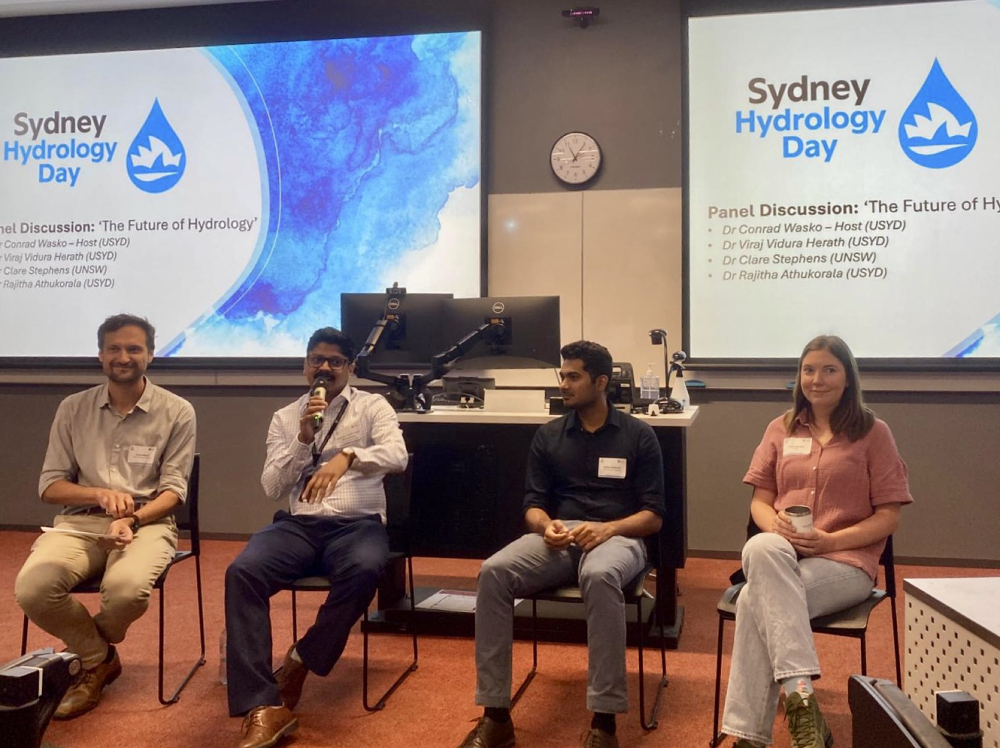
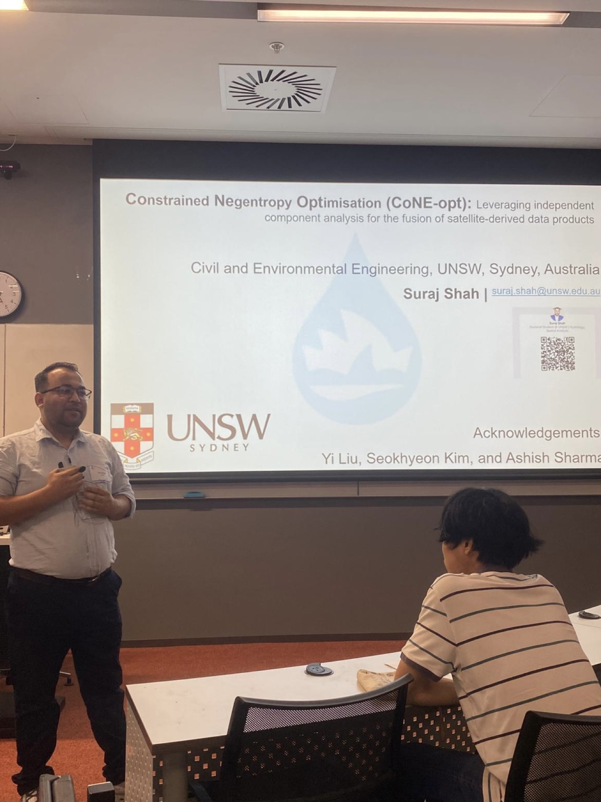
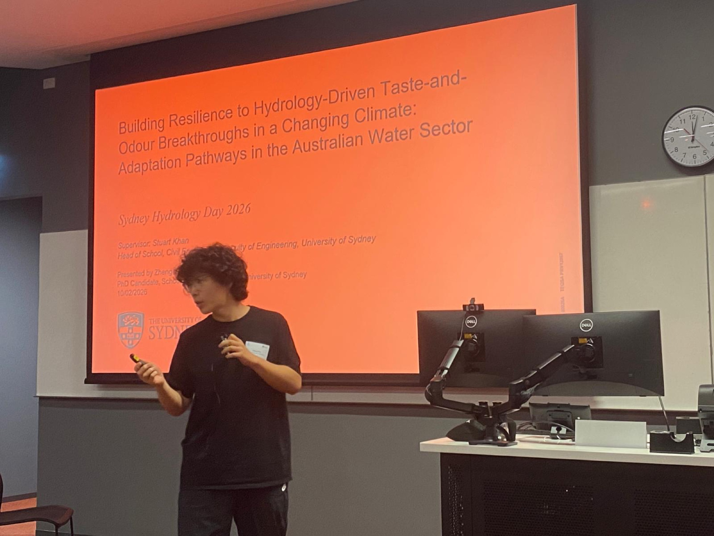
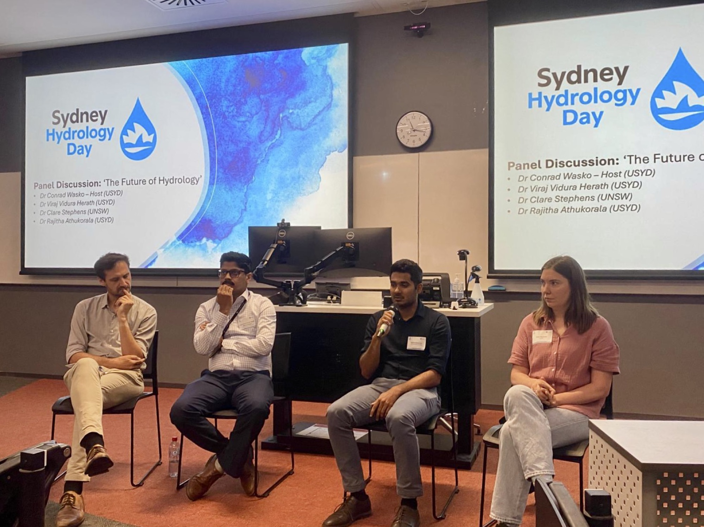
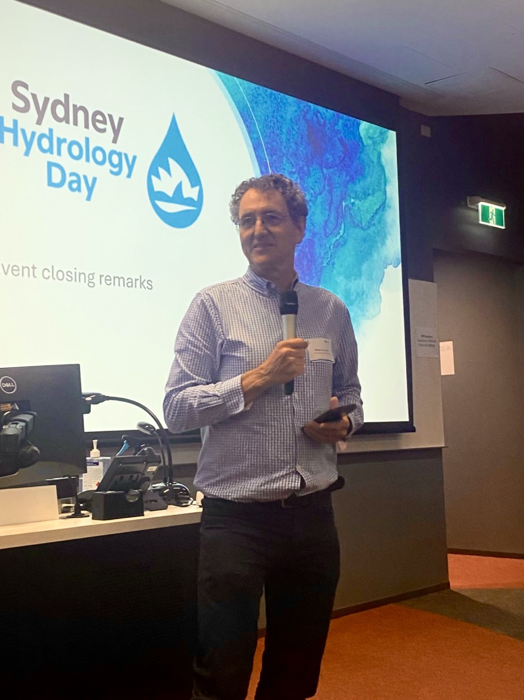
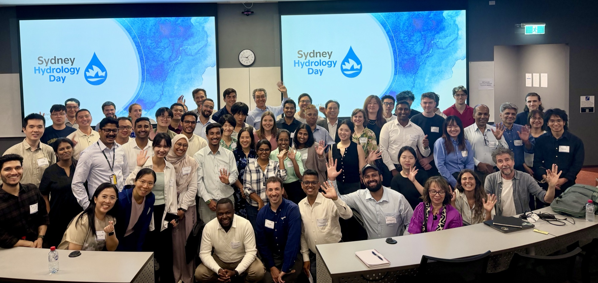
Registration & Abstract Submission
Registration
Registration for Sydney Hydrology Day 2027 is now open. Join us for a full day of presentations, discussions, and networking.
Abstract Submission
We welcome abstracts for presentations and posters. This year will feature an expanded poster session around lunch.
Presentations and posters are just discussion starters on this day!
Venue
The University of Sydney
Camperdown / Darlington Campus • Sydney, NSW
The exact building and lecture theatre location will be announced closer to the event date.
Contact
For more information or inquiries regarding Sydney Hydrology Day, please contact:
soles.pahgisl@sydney.edu.au